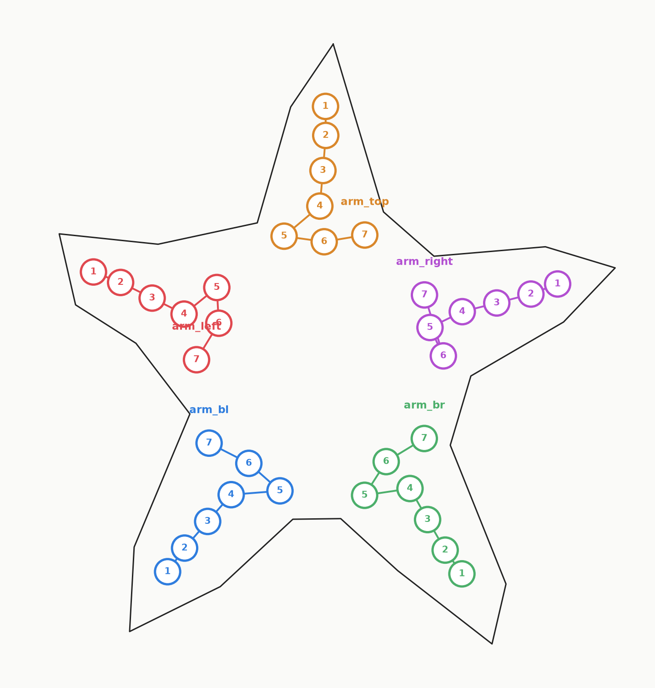

<title>All 5 tentacle LED chains — order check</title>
<style>
  :root{
    --bg:#f6f4f0; --panel:#ffffff; --ink:#1c1b19; --ink-dim:#6b6560; --rule:#ddd7cd;
  }
  @media (prefers-color-scheme: dark){
    :root{ --bg:#17191b; --panel:#1f2225; --ink:#ece8e1; --ink-dim:#9a948c; --rule:#34383c; }
  }
  :root[data-theme="dark"]{ --bg:#17191b; --panel:#1f2225; --ink:#ece8e1; --ink-dim:#9a948c; --rule:#34383c; }
  :root[data-theme="light"]{ --bg:#f6f4f0; --panel:#ffffff; --ink:#1c1b19; --ink-dim:#6b6560; --rule:#ddd7cd; }

  *{box-sizing:border-box;}
  body{
    margin:0; background:var(--bg); color:var(--ink);
    font-family: ui-sans-serif, system-ui, -apple-system, "Segoe UI", sans-serif;
    display:flex; justify-content:center; padding:2.5rem 1.25rem 4rem;
  }
  main{ width:100%; max-width:52rem; display:flex; flex-direction:column; gap:1.25rem; }
  h1{
    font-family: ui-monospace, "SFMono-Regular", Menlo, Consolas, monospace;
    font-size:1.1rem; letter-spacing:0.02em; font-weight:600; margin:0; text-wrap:balance;
  }
  .sub{ color:var(--ink-dim); font-size:0.95rem; max-width:40rem; line-height:1.55; }
  figure{ margin:0; background:var(--panel); border:1px solid var(--rule); border-radius:4px; padding:0.75rem; }
  figure img{ display:block; width:100%; height:auto; border-radius:2px; }
  ul{ margin:0; padding-left:1.1rem; color:var(--ink-dim); font-size:0.9rem; line-height:1.6; }
  li b{ color:var(--ink); font-weight:600; }
  .panel{ background:var(--panel); border:1px solid var(--rule); border-radius:4px; padding:1rem 1.25rem; }
</style>
<main>
  <h1>all 5 tentacles — reconstructed LED chains</h1>
  <p class="sub">
    Re-extracted by detecting red pixels directly in a fresh high-resolution render of
    <code>starfish_silkscreen.svg</code>, instead of parsing path geometry &mdash; the previous
    pass mis-measured two circles on arm_right because your edit had merged some paths into
    multi-part shapes, which inflated their computed centers. Pixel detection sidesteps that.
  </p>

  <figure>
    
  </figure>

  <div class="panel">
    <ul>
      <li><b>arm_right</b> (purple) &mdash; #1 and #3 now resolve correctly; the chain runs a clean 1&#8594;5 line down the arm instead of jumping around.</li>
      <li><b>arm_left</b>, <b>arm_br</b>, <b>arm_top</b> &mdash; #5/#6 swapped as requested.</li>
      <li><b>arm_bl</b> &mdash; re-confirmed against your original approval (this data source changed slightly, needed the same #5/#6 swap again).</li>
    </ul>
  </div>

  <p class="sub">
    If this looks right, next step is moving the matrix off-board and placing all 35 tentacle
    LEDs (plus rotating each to follow its local chain direction) via the IPC API.
  </p>
</main>
